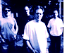
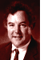
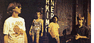
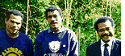

T R A N S C R I P T S
Paul Saffo
Luminary futurist
13 October 1995
Deborah Jaffe
Sadomasochist artist
4 October 1995
Carl Stone
Sonic purist composer
20 September 1995
 Kathy Acker
Kathy Acker
Author
13 September 1995
Jack Womack
Sci-fi author
29 August 1995
Susie Bright
Sex-positive educator
23 August 1995
Robert Morrison
Executive director of the American Music Conference
17 August 1995
Steel Pole Bath Tub
Quirky indie trio based in San Francisco
16 August 1995
Bryan Cholfin
Publisher
15 August 1995
Timothy Leary
High priest of psychedelia
10 August 1995
Mary E. S. Morris
Author of HTML for Fun and Profit
9 August 1995
Don Was
Superproducer
7 August 1995
Jaron Lanier
Founder of VR
24 July 1995
The Residents
Anonymous Multimedia Band
20 July 1995
Railroad Jerk
Indie Dirt-Rock Band
19 July 1995
Laurie Anderson
Performance Artist
18 July 1995
Joey Ramone
Lead Singer of the Ramones
17 July 1995
Jeffrey Klein
Founding Editor of Mother Jones and MoJo Wire
14 July 1995

Pell Mell
Indy Rockers
6 July 1995
Mike Langberg
CD-ROM Expert
27 June 1995
King Crimson
Progressive Rockers
26 June 1995
Malcolm
CasSelle
Co-Founder, NetNoir
21 June 1995
Bruce Tognazzini
Interface Designer
14 June 1995
Aaron
Barnhart
David Letterman FAQ-Meister
2 June 1995
Malcolm
McLaren
Cultural Icon
26 May 1995
Nick West
Multimedia Dood
24 May 1995
Jenny Holzer
Postmodern Artist
23 May 1995
Martin Amis
Literary V.I.P.
16 May 1995
Donna Hoffman and
Thomas Novak
Internet Marketing Experts
15 May 1995
Jon Katz
Media Critic
12 May 1995
 Lee Ranaldo
Sonic Youth Guitarist
11 May 1995
Gary
Chapman
Troublemaker
5 May 1995
Richard
Dawkins
DNA Authority
27 April 1995
 Tapa Artists
Papua New Guinea
25 April 1995
Chris
Peterson
Nanotechnology Expert
19 April 1995
 Tapa exhibition:
Tapa exhibition:
Larry Rinder
Curator of the Matrix Gallery of the
University Art Museum in Berkeley
Lafcadio Cortesi
Tropical forest and coral reef
campaigner with Greenpeace Pacific
11 April 1995
Bruce
Sterling
Science Fiction Writer
7 April 1995
Dr. Lance
Hoffman
Security Expert
28 March 1995
Michael
Collins
Cyberhipster
23 March 1995
Jonathan
Lethem
Noir-Tech Novelist
17 March 1995
Po Bronson
Young Literary Phenom
16 March 1995
John
December
Author,The World Wide Web Unleashed
14 March 1995
Mark Leyner
Way PoMo Author
13 March 1995
Stephen Levy
Technology Columnist, Newsweek
2 March 1995
John
Seabrook
Pop-Culture writer at The New Yorker
1 March 1995
R.U.
Sirius
Cyberpunk Luminary
23 February 1995
 Julian
Dibbell
Julian
Dibbell
On Viruses
22 February 1995
Neal
Stephenson
author of Snow Crash
and The Diamond Age
19 January 1995
Donna Hoffman
and
Thomas Novak
Associate Professors of Marketing
Vanderbilt University's Owen
Graduate School of Management
4 January 1995

Copyright © 1995
HotWired Ventures LLC. All rights reserved.